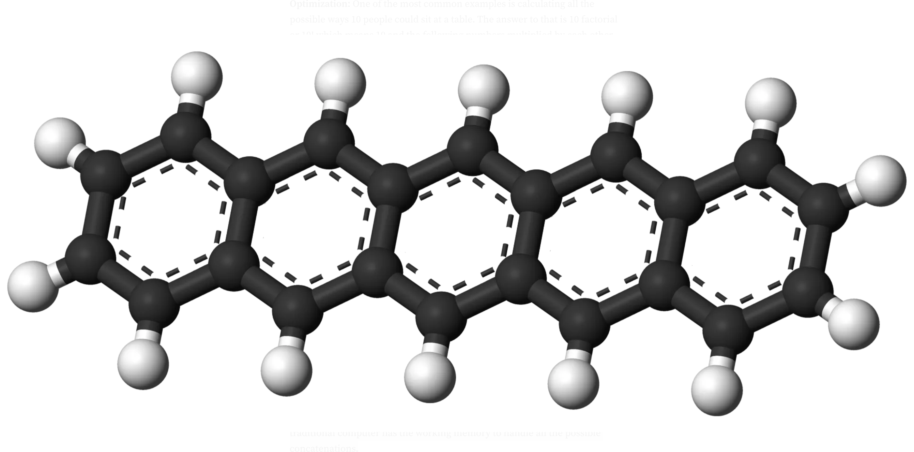
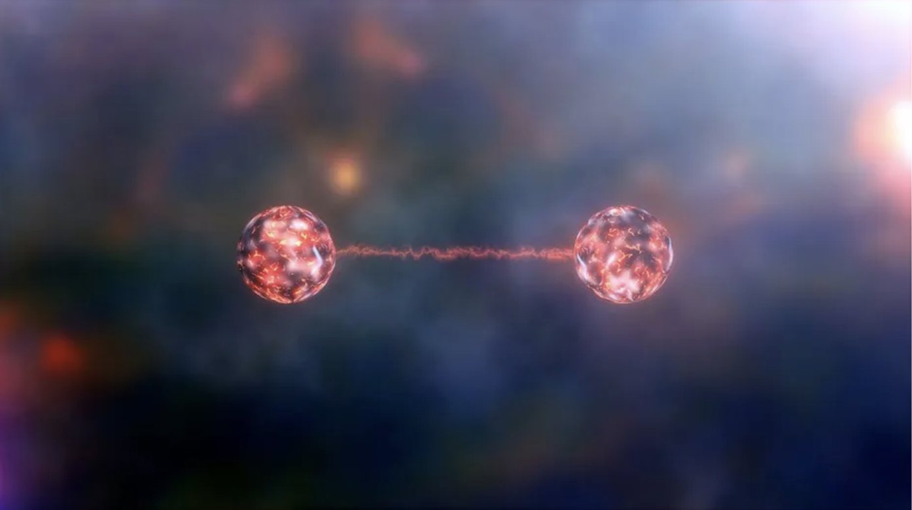
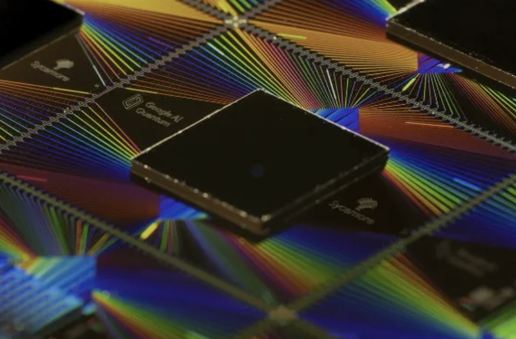

Almost over a hundred years ago now, computers spanned the size of entire rooms, limited only to performing arithmetic operations using mechanical switches subject to continuous anomalies; and they were available only to organizations able to carry the maintenance costs. Today, in the age of rapid information spread, the best computing devices are within the reach of every single human being, with functionality, pricing, efficiency, and every other spec, outperforming the best of the previous century. This exponential advancement has been the front-runner in the race to achieve breathtaking computing speeds. However, all computers work with bits, namely 0’s and 1’s and the limited flexibility of these data holders poses problems that limit the
Optimization: One of the most common examples is calculating all the possible ways 10 people could sit at a table. The answer to that is 10 factorial or 10! which means 10 and the following numbers multiplied by each other. 10! is over 3.6 million, however, as soon as you add 1 person, that number increases exponentially. Therefore traditional computers that run on 0’s and 1’s aren’t able to properly configure all possible outcomes of specific problems.
Chemical Simulations: Simulating chemical enzymes is another obstacle faced by the limited computing power of traditional computers. The largest molecule capable of being mimicked by the most capable supercomputers in the world is the pentacene molecule, which contains only 22 carbon atoms, and 14 hydrogen atoms. Why is this? To accurately simulate the mechanics of subatomic particles, every repulsion between electrons and attraction to the nuclei needs to be accounted for, and therefore as soon as one more electron is added to the electrostatic pool, all the numbers need to be recalculated. Classical computers simply can’t compute these processes, and once again quantum computers come in as the saviors.
Protein Sequencing: Supercomputers are great at difficult tasks such as riffling through massive databases of protein sequences, however accurately figuring out how those proteins will fold is a complex biological process that no computer can process. As protein sequences get longer and longer, the harder it is to predict all possible combinations it will fold. A chain of 100 amino acids could theoretically fold many trillions of ways, thus no traditional computer has the working memory to handle all the possible concatenations.
The most standard definition of how traditional computers work is by using bits, namely 0’s and 1’s. All information, even the words that you are reading on your screens right now, are stored and processed using bits, which can either be 0 or 1. In modern computing, bits are simplified to represent the presence (1) or absence (0) of an electrical signal, where the use of transistors comes in place. However quantum computers, on the other hand, work with qubits, which gives them them supremacy over traditional computers, providing an evident edge over traditional bits.
The word “Qubits” stands for quantum bits, and it is the physical carrier of quantum information, much like the bit. Bits and qubits don’t have much difference, however, the property that allows the latter to have higher computational supremacy is its ability to exist as both a 0, and a 1 at the same time. Qubits, therefore, are allowed to be exponentially more powerful than traditional bits, boosting efficiency in certain algorithms. However, this is thanks to two quantum phenomena known as Superposition, and Entanglement, which allow qubits to completely leverage the power of quantum mechanics and store information in peculiar ways.
Superposition, in simple words, can be defined as the ability of a quantum system to be in multiple states at the same time until it’s measured. Erwin Schrödinger, an Austrian physicist explained this phenomenon in the early stages of quantum physics, with Schrödinger’s cat experiment.
In the experiment, a cat is placed in a box with a radioactive substance, and a Geiger counter (detects radioactivity), detects radioactivity and breaks the flask. After that happens, observers don’t know whether the cat is alive or dead, therefore it is in a superposition of being alive or dead. Yet, when looking in the box, you can determine whether the cat is alive or dead, and therefore assign it a single state (after measuring), rather than the uncertainty of two when the cat is in the box.
Similarly, with quantum states that act as qubits, they can be in a superposition between 0 (dead) and 1 (alive), however as soon as the state is measured (opening the box), they fall back into a definite 1 or 0 value. Now, qubits could be any quantum substance; a photon, a nucleus, or even an electron. To further explain how superposition works in quantum computers, let's dive deeper by using an electron as an example.
Subatomic particles, namely an electron in this situation, behave as magnets, moving with the flow of the magnetic field surrounding the nuclei. The property that allows electrons to do this is called spin, where a spin down refers to a 0 in quantum information, and a spin up refers to 1. This is because when the electron is facing downwards, it is in its lowest energy level, however, it can be in go into a 1 state, when sufficient energy is provided, thus it is in its highest energy level. This is similar to the absence/presence of an electrical charge in the traditional bits mentioned above.
However, due to superposition, the electron is continually spinning between a state of 0, and 1. The electron is in a quantum superposition. This means that the probability that it is a 1 or a 0 is neither 0.0 nor 1.0, it is something in between. As soon as you measure it though, you get a relative coefficient that tells you which state you are more likely to find the electron/qubit in.
Now, 2 traditional bits will allow you to store 2 pieces of information. 3 bits will allow you 8, and so on. However, let's say you have 2 electrons with their relative spins, therefore you have with you 2 qubits in a superposition of 0’s and 1’s. To write a legitimate quantum mechanical state, and determine this “two-spin-system” state, you’ll need 4 coefficients with all the possible spin up and downs of the electron (up up [11], up down [10], down up [01], down down [00]).
Now if you add one more qubit, namely 3 quantum particles containing information, you’ll need 8 respective coefficients and their probabilities (up up up [111], up up down [110], up down down [100], down up down [010]…., down down down [000]).
Ok, we have successful superposition in our quantum system, but how does that actually help us achieve any advancements algorithms-wise? This is where the second phenomenon I mentioned comes into place: Quantum Entanglement.
Quantum Entanglement is a concept that daunts physicists, due to its complexity and its clear disparity from classical mechanics. When two particles are entangled their states cannot be described independently of each other. Their physical properties such as position, momentum, spin, and polarization are perfectly correlated no matter the distance. Therefore, two entangled qubits are related and can be used in algorithms to compute optimization problems, as measuring one qubit, gives us a measurement of its entangled pair.
However entangled particles work together, and cannot achieve anything individually. Entanglement isn’t limited to perfect correlation, rather it goes beyond that and allows for quantum particles to learn from each other and unlock more information than unentangled ones.
Quantum Entanglement is also being used to explore areas of technology that would allow communications between two entities long distances apart. One major problem that defies a lot of physics laws, is the idea that two entangled bits that are let's say, over a million light years apart, can allow for communication that is faster than the speed of light. However, mathematically, this stands true but it breaks every law in the physics book. This concept daunts physics and therefore quantum mechanics isn’t completely understood yet, and it probably never will. Einstein also strongly opposed quantum mechanics as he believed everything can be calculated mathematically, and quantum mechanics evidently avoided this.
Trapped Atoms and Ions: Energy levels of electrons in neutral atoms or ions can also be used as qubits. Naturally, these electrons occupy the lowest energy level, however using lasers, and exploiting the photoelectric effect, we can “excite” them into higher energy levels. The ability to manipulate individual atoms, photons and their interactions may help in the construction of sophisticated quantum system simulators.
Photons: A Photon is a wave of electromagnetic radiation, and it can act as a qubit in certain quantum computers. The polarization of a photon is the direction of its electromagnetic radiation. If a photon is horizontally polarized, it is in the 0 state, however, if it's vertically polarized, it is in a 1 or positive state. Another way photons can be used as qubits is if you pass them through a beam splitter. If it takes the bottom path, it is a 1, however, if it takes the top path it is 0.
Superconducting circuits: This is the method used in most supercomputers to create quantum circuits for performing specific tasks. Some materials allow the flow of an electrical current without resistance; they are known as superconductors. We use this property to design electrical circuits to behave like qubits. This is done by assigning a value to the direction in which the current flows (Counterclockwise = 1, Clockwise=0)
We’ve got all the important quantum phenomena down for quantum computers. Now let's get into how algorithms and gates actually work.
In simple terms, quantum algorithms work by phasing. To encode quantum problems, a phase is applied to each of the states of the qubits that are in superposition. When waves are in phase, the amplitudes add, however when they are out of phase, they cancel out. In quantum algorithms, phasing is used with interference to cancel out some answers, and amplify others, allowing for successful algorithmic creations. However, the bare bones of how any computer logic works are by using gates, so let's take a look into what those are.
Computer logic gates are the building blocks of circuits that make up the machine that you are reading this on. They make the decisions of passing forward information. For example, there are the OR, NOR, AND, NAND, etc. gates, that make the decisions in the computers. Similarly, Quantum Computers use gates to perform algorithmic operations; let’s explore some of these gates briefly.
The Hadamard Gate is the most frequently used gate in Quantum Computing and it can be used to create a superposition of qubits. When applied the Hadamard Gate to a qubit, there is an equal chance for the qubit to turn out to be a 0, or a 1. The Hadamard Gate is often used to entangle two qubits with the combination of a CNOT gate on the control qubits.
The Control-NOT Gate, also known as the Control-X gate acts on a pair of qubits. It performs a NOT (returns the opposite bit) on the control bit whenever it is in state 1. The CNOT gate is mainly used to entangle a pair of qubits after they have been put into a superposition.
Also known as the double controlled-NOT gate, the Toffoli Gate has two control qubits and a target, where it applied a NOT to the target when both control states are in the 1 state. The Hadamard Gate, along with the Toffoli are together used as a set universal gate for quantum computing.
There is a myriad of other quantum gates, however, the scope of this article covers only a few. Phase Gates, Identity Gate, and SWAP Gate, are just a few of the major logical operators used in Quantum Computing to create and execute algorithms. A full list can be found here for reference.
Moving forward, taking a look into major algorithms themselves is essential for the understanding of Quantum Computing. Getting the logistics of the gates out of the way, let’s explore some famous Quantum Algorithms.
Right at the start of the article, we discussed how Quantum Computers had an edge over classical ones in computational power. Grover’s Algorithm majorly strengthens this. This algorithm allows for the speeding up of an unstructured search problem quadratically, as well as being used for run-time improvements for other quantum algorithms. This is done with the amplitude amplification trick (recall phasing?), where wanted solutions are amplified by the applied phase. To simplify this concept, a quick simulation of this algorithm can be used:
Suppose you have N number of items, and among these individual placeholders, you are looking for a single item of your use (the marked item). Classical computers would have to go through possibly N/2 of all those items, or even worse, through all N of them as missing items are a vulnerability. With Grover’s Algorithm however, it would take roughly √N items’ search through to find the desired output as a result of quadratic speed up due to the use of 2^N superpositioned qubits.
All integers have a unique set of decompositions into a product of its primes, however finding the prime factors is believed to be a tough task. The security encryption of majorly all our systems relies on the fact that factoring integers with a thousand or more digits is practically impossible. This was challenged by Peter Shor in 1995 when he proposed a polynomial-time quantum algorithm for the factoring problem. Shor’s algorithm is by far the most disruptive example of quantum supremacy and classical encryption weakness.
The solution proposes an efficient answer to factoring out prime numbers, rather than inefficiently brute-forcing them. A quadratic sieve, on the other hand, reconstructs digits such that they are multiples of a²-b², and later finds out whether they have common factors with N. Therefore it is the most efficient classical factoring algorithm, known as a general number field sieve, as it achieves an asymptotic runtime exponential in √d
2022 left with a huge upwards dent in the hope for Quantum Computing becoming a reality, and successfully integrating into everyday society. By the end of the year, IBM took a leap from its 127 qubit chip to a much upgraded, modified, and powerful Osprey chip which featured 433 qubits. With the dawn of the forthcoming advancements in 2023, IBM hopes to release a whopping 1,121-qubit processor called Condor. Just grasp that in.
There are more possible states in that chip than there are atoms in the universe!!With these upgrades taking place at such a fast pace, it is evident that the advancements are getting harder and harder to keep up with, enforcing the hopeful future Quantum Computing brings with it. Myriad solutions are in the limelight thanks to QC, such as solving climate change, finding new enzymes, developing safer batteries, and creating stronger cybersecurity programs.
Despite these promising hopes, there is still a reality to be faced. Quantum Computers are not going to replace classical computers. If you want to watch a high res video or play a video game, traditional machines are still your go-to. But Quantum Computers are going to provide an exponential edge in terms of computing parallelism which is eventually going to help the world’s most pressing and important problems.